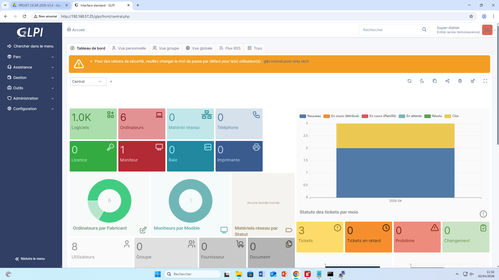
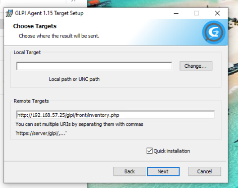

A
La demande
Présentation
CICAR est une société de location automobile aux Îles Canaries. L'administrateur du siège de Tenerife souhaite un accès distant sécurisé sur tous les équipements de chaque agence, centralisé sous MobaXterm, avec double authentification sur le SNS, et un helpdesk GLPI pour la gestion des incidents.
Objectifs RP 4
- Accès distant centralisé MobaXterm (SSH, RDP, HTTPS)
- Authentification 2FA sur Stormshield (Google Authenticator)
- Gestion des flux (règles de filtrage pare-feu)
- GLPI + GLPI_Agent (inventaire + helpdesk)
- Tests remontées équipements et tickets
- Procédure utilisateur helpdesk
B
Le plan
Plan d'adressage
| Équipement / VM |
Rôle |
Adresse IP |
Accès distant / Identifiants |
| 🏢 Agence El Hierro (192.168.54.0/24) |
| Stormshield SNS 310 |
Pare-feu / VPN (2FA activé) |
192.168.54.254 |
admin / Afpi5962! + Code OTP (Google Authenticator) |
| AD/DNS/DHCP |
Windows Server 2019 |
192.168.54.10 |
RDP : Administrateur / @fpi5962! |
| SRV-EL-WEB-01 |
Serveur Apache |
192.168.54.15 |
SSH : root / Afpi5962! |
| SRV-EL-WEB-02 |
Serveur Apache |
192.168.54.16 |
SSH : root / Afpi5962! |
| SRV-EL-PROXY |
HAProxy (DMZ) |
192.168.64.1 |
SSH : root / Afpi5962! |
| ESXi principal |
Hyperviseur LAN |
192.168.54.1 |
root / Afpi5962! |
| ESXi secondaire |
Hyperviseur (Load Balancing) |
192.168.69.94 |
root / Afpi5962! |
| TP-Link SG-3424 |
Switch manageable LAN |
192.168.54.20 |
admin / Afpi5962 |
| AP WiFi WA901N |
Borne WiFi 802.1X |
192.168.54.30 |
admin / Afpi5962! |
| 🏢 Siège Tenerife (192.168.57.0/24) |
| Zimbra Mail |
Messagerie |
192.168.57.40 |
admin@el-cicar.es / Afpi5962
🌐 https://mail.el-cicar.es:7071 Afpi5962! |
| Centreon |
Supervision SNMP |
192.168.57.50 |
HTTPS : admin / Centreon!123 |
| TrueNAS |
NAS RAID-5 (sauvegardes Veeam) |
192.168.57.2 |
📁 el-user / Afpi5962!
🖥️ truenas_admin / Afpi5962! |
| GLPI |
Helpdesk & Inventaire |
192.168.57.60 |
HTTPS : glpi-admin / À définir lors de l'installation |
Schéma d'infrastructure
État des lieux technique : Représentation de l'infrastructure réseau avant déploiement des solutions d'accès distant. Le schéma détaille la segmentation par VLANs et la sécurisation par les pare-feu Stormshield.
C
Le projet
🖥️ 1. Accès distant centralisé — MobaXterm
MobaXterm centralise les connexions SSH (serveurs Linux), RDP (AD) et HTTPS (Stormshield) via le tunnel VPN IPsec.
📌 Appui à l'administrateur du siège : recensement des connexions et ouverture des flux.
🔌
PHOTO 1 — MobaXterm : sessions d'administration

Sessions SSH, RDP et HTTPS enregistrées pour l'agence El Hierro.
mobaxterm_sessions.png
🔐 2. Double authentification 2FA (Google Authenticator)
Pour renforcer la sécurité des accès administratifs, l'authentification à deux facteurs a été activée sur le pare-feu Stormshield SNS 310. La méthode retenue est le One Time Password (OTP) avec l'extension Google Authenticator.
⚙️
PHOTO 2 — Activation de la double authentification

Interface Stormshield : activation de la double authentification pour l'utilisateur Administrateur.
Méthode : Google Authenticator (OTP)
Capture d'écran 2026-03-30 113708.png
🔢
PHOTO 3 — Connexion avec code OTP

Page de connexion demandant le code OTP généré par Google Authenticator après saisie du mot de passe.
Capture d'écran 2026-03-30 113919.png
🌊 3. Gestion des flux — VPN IPsec
Un tunnel VPN IPsec est établi entre le Stormshield SNS 310 de l'agence El Hierro et le pare-feu du siège de Tenerife, permettant les accès distants sécurisés et les sauvegardes Veeam.
🔗
PHOTO 4 — Tunnels VPN IPsec actifs (Stormshield)

Console Stormshield SNS 310 : tunnels VPN IPsec établis entre l'agence El Hierro (192.168.54.0/24) et le siège Tenerife (Site_FW_TF).
Profil de chiffrement : StrongEncryption.
Capture d'écran 2026-03-30 085743.png
📦 4. GLPI — Inventaire et Helpdesk
GLPI installé au siège, avec GLPI_Agent sur tous les postes/serveurs pour l'inventaire automatique et la gestion des tickets.
🖥️
PHOTO 5 — GLPI : Inventaire matériel

Liste des ordinateurs remontés par GLPI_Agent.
glpi_inventory.png
⚙️
PHOTO 6 — GLPI Agent

Installation GLPI Agent.
glpi_agent.png
🧪 5. Tests des remontées et tickets
- Test inventaire : nouveau poste → remontée automatique dans GLPI
- Test ticket : création ticket → notification administrateur
- Test workflow : traitement, changement de statut, clôture
📝 6. Procédure utilisateur helpdesk
📌 Création d'un ticket d'incident sur GLPI
Cette procédure décrit les étapes à suivre pour soumettre une demande via la plateforme GLPI, qu'il s'agisse d'un incident (dysfonctionnement) ou d'une demande de service. Toute demande doit impérativement transiter par GLPI afin de garantir un traitement structuré, un suivi efficace et une traçabilité complète.
- Aller sur
https://glpi.el-cicars.es
- S'authentifier avec vos identifiants professionnels (login / mot de passe).
- Depuis la page d'accueil, sélectionner l'option correspondant à votre besoin :
- « Signaler un problème » — pour tout dysfonctionnement ou incident
- « Demander un service » — pour toute demande hors panne
Sélectionnez l'option adaptée à votre situation :
⚠ Signaler un problème
Pour tout dysfonctionnement constaté :
- Application indisponible
- Incident matériel
- Message d'erreur
✦ Demander un service
Pour toute demande hors panne :
- Demande d'accès ou de droits
- Installation de logiciel
- Demande de matériel
Compléter l'ensemble des champs disponibles dans le formulaire :
Urgence
Sélectionner le niveau d'urgence : faible, moyenne ou élevée selon l'impact constaté.
Catégorie
Choisir la catégorie correspondant à la demande : matériel, logiciel, réseau, accès, etc.
Matériel
Sélectionner l'équipement concerné si applicable (ordinateur, imprimante, téléphone...).
Observateurs
Ajouter, si nécessaire, les personnes devant être notifiées du suivi du ticket.
Lieu
Indiquer le site ou l'emplacement géographique concerné par la demande.
Titre
Saisir un titre court et explicite. Ex : « Impossible d'accéder à l'application métier ».
Description
Décrire précisément : le problème / besoin, le contexte, la date d'apparition, les messages d'erreur, les actions déjà effectuées.
- Joindre tout document utile à la compréhension de la demande :
- Captures d'écran illustrant le problème
- Fichiers journaux (logs) ou documents de référence
- Utiliser l'éditeur intégré pour structurer la description si nécessaire.
- Vérifier l'ensemble des informations saisies avant envoi.
- Cliquer sur « Envoyer » ou « Soumettre » pour créer le ticket.
- Une confirmation de création est transmise automatiquement par e-mail.
- Accéder à « Voir vos tickets » depuis la page d'accueil pour consulter l'état de la demande.
- Tous les échanges avec le support sont centralisés directement dans le ticket.
- Toute mise à jour génère une notification e-mail automatique.
Bonnes pratiques
- ✔Renseigner des informations précises et complètes pour accélérer le traitement.
- ✔Choisir un titre explicite et synthétique décrivant clairement la situation.
- ✔Joindre des captures d'écran en cas d'incident visuel pour faciliter le diagnostic.
- ✔Ne créer qu'un seul ticket par demande — éviter les doublons.
- ✔En cas d'urgence critique, contacter également le support par téléphone.
📌 RAPPEL IMPORTANT
Toute demande, qu'il s'agisse d'un incident ou d'une demande de service, doit impérativement être effectuée via la plateforme GLPI afin de garantir un traitement structuré, un suivi efficace et une traçabilité complète pour le service informatique.
📋
PHOTO 7 — Formulaire de création de ticket GLPI
Formulaire Self-Service : catégorie, urgence, titre, description.
glpi_ticket_form_1.pdf / glpi_ticket_form_2.pdf / glpi_ticket_form_3.pdf
✅
Livrables RP 4 validés
✔ Accès distant MobaXterm (SSH, RDP, HTTPS)
✔ 2FA Google Authenticator sur Stormshield
✔ Règles de filtrage configurées
✔ GLPI + GLPI_Agent (inventaire + helpdesk)
✔ Tests remontées et tickets validés
✔ Procédure utilisateur rédigée
Synthèse : Schéma Réseau Final (RP 4)
Schéma complet incluant les accès distants (2FA), le helpdesk GLPI et l'administration via MobaXterm.
← Retour au portfolio